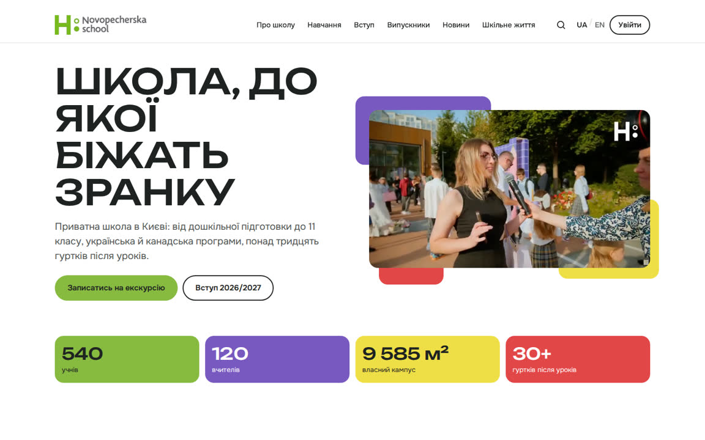
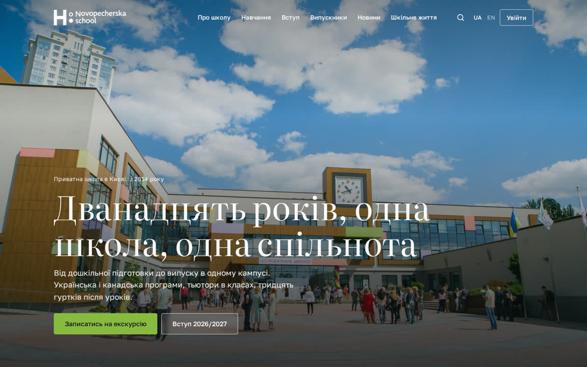

Новопечерська школа: два концепти головної сторінки
Два напрями для одного сайту. Обидва зібрано з реальних фото і фактів школи; пункти меню й кнопки поки що нікуди не ведуть. Відкрийте з телефона теж: головний сценарій саме там.

Концепт A
Спільнота
Тепло, рух, люди в кадрі. Кольори фасаду школи як плашки, відео в першому екрані, випускники як обличчя та історії.
Відкрити концепт A
Концепт B
Спадщина
Спокійний преміум: велика фотографія, антиква в заголовках, майже монохром із одним зеленим акцентом, випускники як перелік університетів.
Відкрити концепт BКонцепти підготовлено для обговорення. Тексти й цифри — зі старого концепту і поточного сайту школи; місця, де потрібні дані школи, позначено «00» або курсивом.